Gestión de Empleados
Repositorio de GitHub Gestión EmpleadosAplicación web fullstack para la gestión integral de empleados y contratos dentro de una organización. Desarrollada con React y TypeScript en el frontend y Node.js con Express en el backend, representa el proyecto más completo del portfolio, incorporando autenticación con roles, aprobación de contratos, reportes con gráficos, exportación a PDF y un sistema de auditoría de cambios.
Tecnologías utilizadas
- Frontend: React, TypeScript, Bootstrap
- Backend: Node.js, Express.js
- Base de datos: MongoDB
- Otras: Generación de PDF, librerías de gráficos
Funcionalidades
Dashboard
La pantalla principal ofrece un resumen visual del estado de la aplicación, con indicadores clave sobre empleados, contratos y actividad reciente, acompañados de gráficos para facilitar la toma de decisiones.
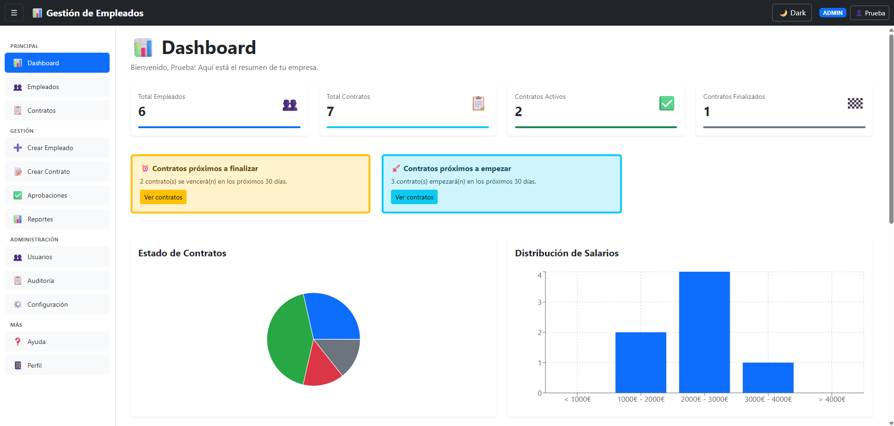
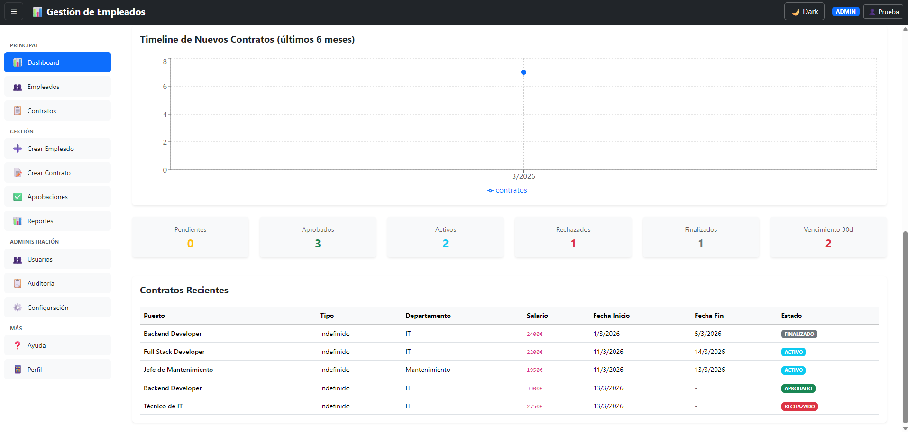
Gestión de empleados
El módulo de empleados permite visualizar el listado completo del personal, con opciones de búsqueda y filtrado para localizar registros rápidamente.
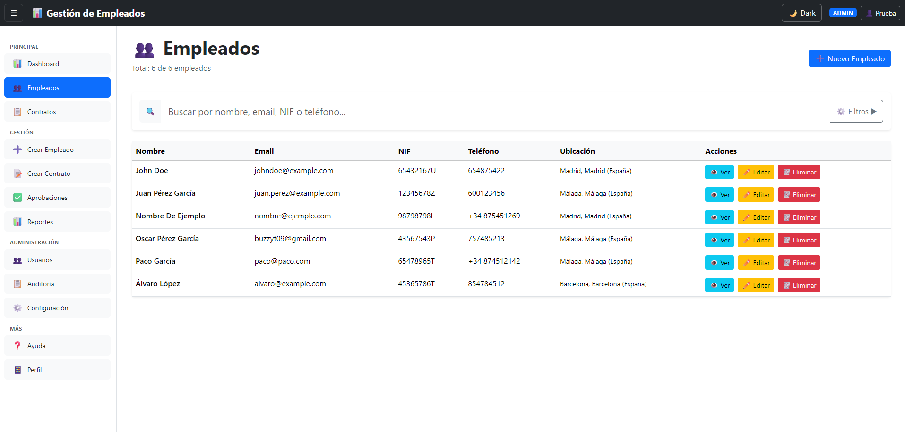
Desde el mismo módulo se pueden dar de alta nuevos empleados mediante un formulario de creación completo.
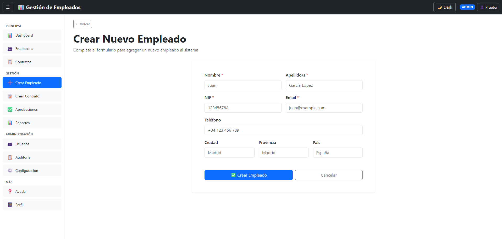
Gestión de contratos
La aplicación incluye un módulo dedicado a la gestión de contratos, donde se pueden consultar todos los contratos activos y su información asociada.
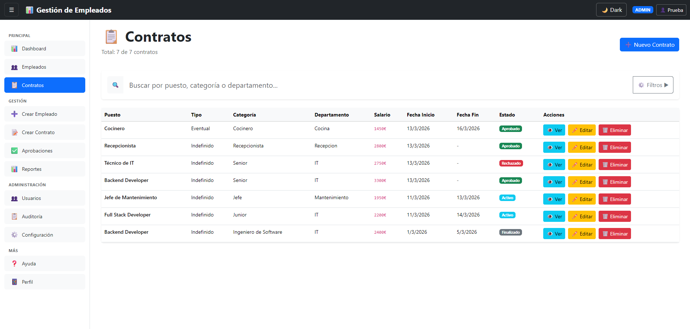
Los nuevos contratos se crean a través de un formulario específico que recoge todos los datos necesarios antes de pasar por el flujo de aprobación.
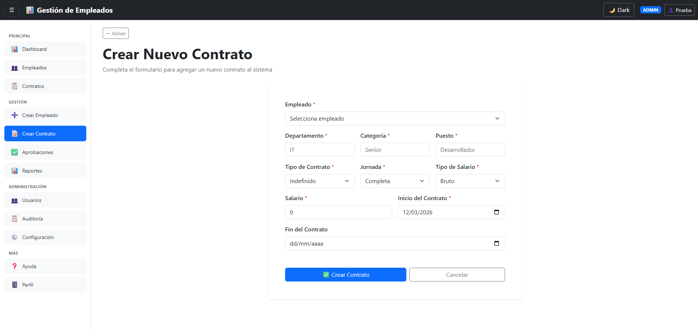
Aprobaciones
Los nuevos contratos no se activan de forma inmediata, sino que pasan por un flujo de aprobación donde los usuarios con los permisos necesarios pueden revisar y aprobar o rechazar cada solicitud.
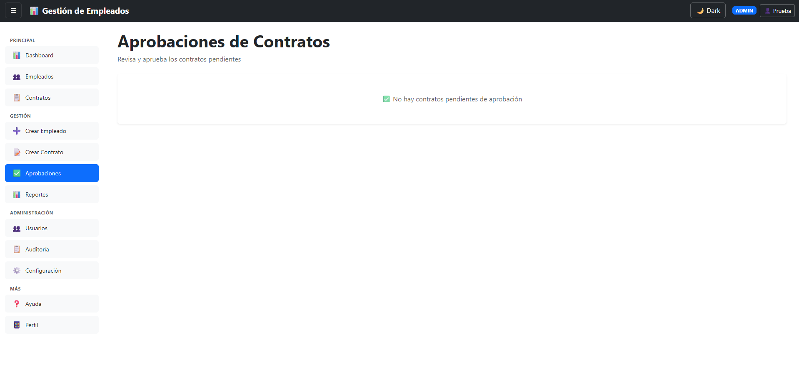
Reportes
El módulo de reportes ofrece una visión analítica de la organización mediante gráficos sobre el gasto en salarios, nuevos contratos realizados en un periodo y otras métricas relevantes, con posibilidad de exportar la información a PDF.
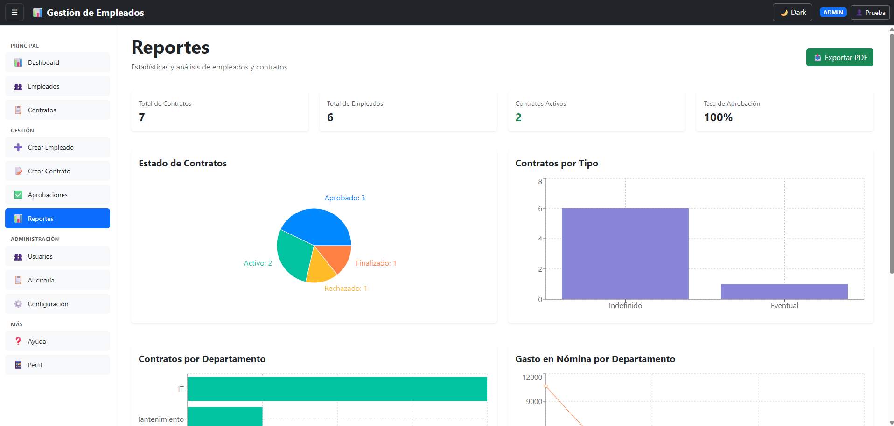
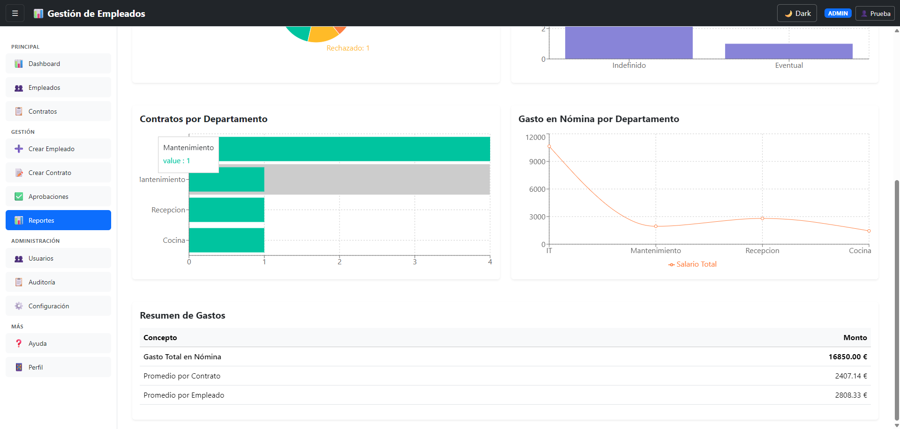
Auditoría
La aplicación registra automáticamente todos los cambios realizados: qué se modificó, cuándo y quién lo hizo. Esto permite mantener una trazabilidad completa de la actividad dentro del sistema.
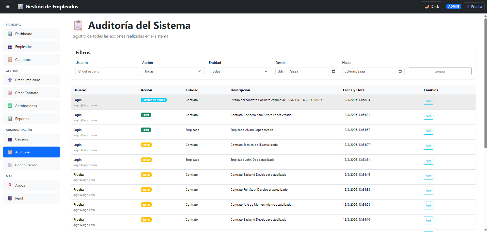
Perfil de usuario
Cada usuario autenticado dispone de una página de perfil donde puede consultar y gestionar su información personal dentro de la aplicación.
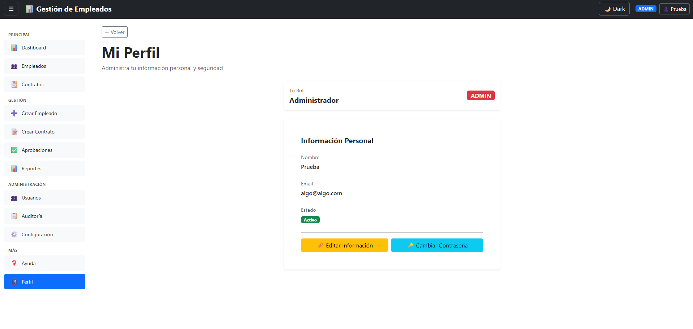